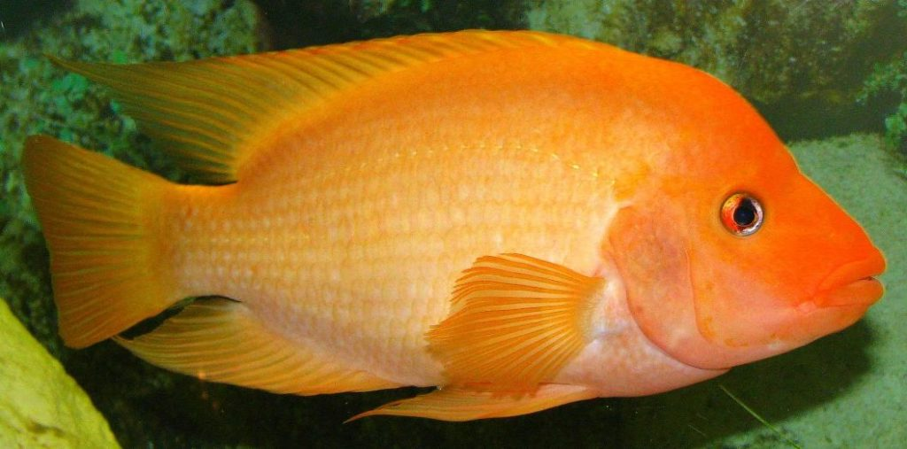

Ikan Red Devil Cichlid
Ikan ini diberi nama red devil cichlid karena sifatnya yang agresif. Untuk itu, ikan ini biasanya hanya bisa dicampur dengan ikan lain saat mereka masih remaja.
Namun, beberapa orang cenderung membuat beberapa gua di dalam akuarium untuk menyiasatinya. Dengan begitu, ikan red devil dewasa membangun wilayahnya sendiri dan tak mengganggu ikan lainnya. Terlepas dari namanya, ikan ini mempunyai corak yang berbeda, mulai dari kuning, putih pucat, oranye, hingga merah.
Perawatan
Akuarium 55 galon adalah yang disarankan untuk satu ikan, dengan 125 galon yang diperlukan untuk sepasang, dan 200 galon jika menyimpan beberapa cichlids besar. Mereka membutuhkan gerakan air moderat bersama dengan penyaringan efisien yang kuat. Filter ganda direkomendasikan untuk ikan ini menggunakan gaya bah dan filter tabung. Meskipun mereka ringan sejauh kondisi air, tingkat oksigen harus dijaga untuk warna dan kesehatan optimal. Untuk mendapatkan tingkat oksigen yang tinggi ini, tambahkan beberapa airstones besar ke tangki.
Sediakan bagian bawah pasir halus dan banyak tempat bersembunyi di antara bebatuan dan kayu. Mereka adalah penggali dan tanaman yang giat tidak berjalan dengan baik karena mereka akan dimakan, diparut atau dijebol. Pastikan batu-batu sudah terpasang dengan baik di dasar gelas yang sebenarnya untuk mencegah terguling. Meskipun penting untuk menyediakan red devil dengan banyak tempat dan tanaman yang bersembunyi, sama pentingnya untuk menyediakan area pusat terbuka bagi mereka untuk berenang.
Pastikan bahwa bagian-bagian yang rapuh dari peralatan seperti pemanas dan inlet / outlet disediakan perlindungan karena Setan Merah dikenal menyerang dan menghancurkan barang-barang ini. Beberapa hal ini lebih baik ditempatkan secara eksternal atau jika itu bukan pilihan tempat mereka di belakang objek yang tidak mudah dipindahkan oleh ikan besar ini.
Reproduksi
The Red Devil Cichlid telah dibesarkan secara ekstensif di penangkaran. Cichlid ini adalah pembuka terbuka dengan keluarga patriark-matriark. Khas dari pemijahan terbuka, mereka lebih suka bertelur di substrat cenderung. Pemijahan biasanya sekitar 600-700 telur yang transparan, warna kuning kuning. Betina merawat induk awal. Dengan suhu 77 ° F (25 ° C), larva menetas setelah sekitar 3 hari. Setelah 5-7 hari, mereka menjadi bebas berenang. Mereka dapat diberi makan dengan Artemia nauplii. Pada usia 2-3 minggu, anak-anak muda juga akan merumput di kulit orang tua mereka untuk tambahan makanan. Lihat deskripsi umum tentang kebiasaan perkembangbiakan cichlid di: Pembibitan Ikan Air Tawar: Cichlids.